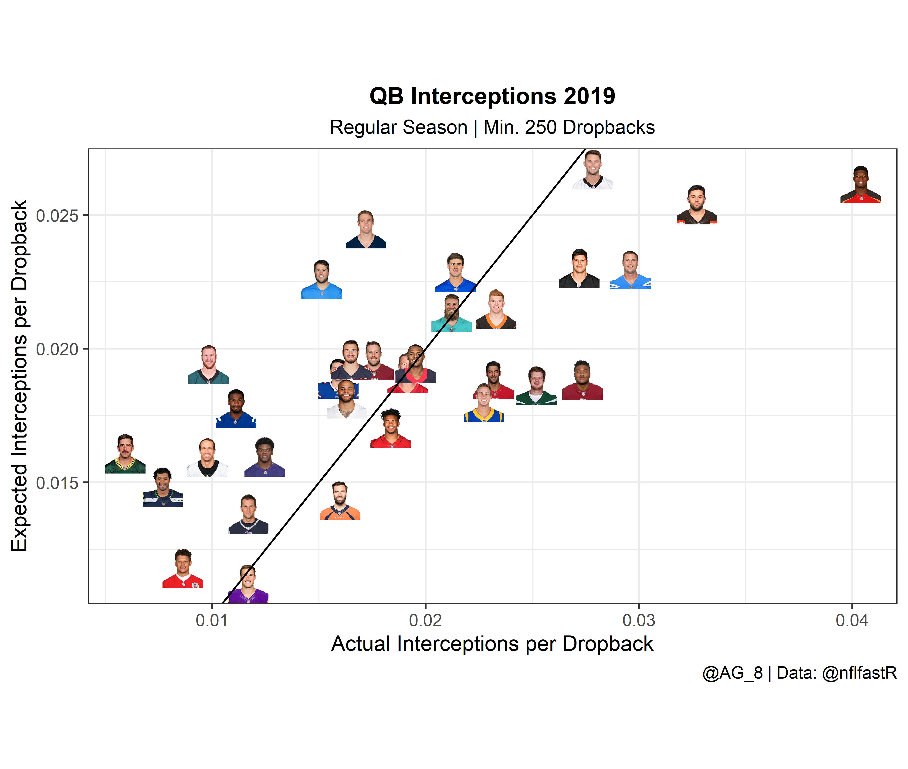

Table of Contents
Intro
Outside of actually scoring points, few events can swing an NFL game the way an interception or fumble can. Over the course of a season, if your quarterback is continuously giving the football away to the other team, your odds of a successful season are likely quite low.
With that said, all turnovers, and specifically QB turnovers, are not created equal. The goal of expected interceptions, expected fumbles and (by adding them together) expected turnovers is to measure how likely an incomplete pass or fumble is to be converted to an interception or lost fumble.1
Load Packages, Get the Data
library(nflfastR)
library(tidyverse)
library(caret)
library(ggimage)
library(gt)Download the latest play-by-play data for all plays from 2006-2019. We’ll be using 2006 as the start year because that’s the first year we have air yards data fully accessible.
seasons <- 2006:2019
pbp <- purrr::map_df(seasons, function(x) {
readRDS(
url(
glue::glue("https://raw.githubusercontent.com/guga31bb/nflfastR-data/master/data/play_by_play_{x}.rds")
)
)
})Download all NFL roster data from 1999-2019.
roster <- readRDS(url("https://raw.githubusercontent.com/guga31bb/nflfastR-data/master/roster-data/roster.rds"))Expected Interceptions
We’ll start with building the model for expected interceptions. Our independent variables will be air yards, pass location, qb hits, number of pass defenders and season.
Start by creating an incompletions dataframe, which filters out all plays that do not result in incomplete passes or interceptions. Additionally, create the pass broken up (pbu) variable based on the number of pass defenders listed. The assumption being if more defenders are listed as defending a given pass, the more congested the throwing lane was.
incompletions <- pbp %>%
filter(season_type == "REG" & season >= 2006 & (incomplete_pass == 1 | interception == 1)) %>%
select(
incomplete_pass, air_yards, pass_defense_1_player_id, pass_defense_2_player_id,
season, posteam, interception, qb_hit, week, defteam, passer, posteam, pass_location, desc
) %>%
mutate(
pbu = case_when(
!is.na(pass_defense_1_player_id) & !is.na(pass_defense_2_player_id) &
(incomplete_pass == 1 | interception == 1) ~ 2,
!is.na(pass_defense_1_player_id) & is.na(pass_defense_2_player_id) &
(incomplete_pass == 1 | interception == 1) ~ 1,
TRUE ~ 0
),
)
incompletions$air_yards[is.na(incompletions$air_yards)] <- 0
incompletions$pass_location[is.na(incompletions$pass_location)] <- "None"Split into training and testing dataframes. I used 2006-2016 to train the model and 2017-2019 to test. The split comes out to approximately 79% training, 21% testing.
int_train <- incompletions %>%
filter(season < 2017) %>%
select(-c(
pass_defense_1_player_id, pass_defense_2_player_id, incomplete_pass, posteam, week, defteam,
passer, posteam, desc
)) %>%
mutate(
interception = if_else(interception == 1, "int", "no.int"),
)
int_test <- incompletions %>%
filter(season >= 2017)Train the model using logistic regression, then add expected interceptions to the int_test dataframe.
fitControl <- trainControl(
method = "repeatedcv",
number = 10,
repeats = 10,
classProbs = TRUE,
summaryFunction = twoClassSummary
)
set.seed(69) # nice
int_model <- train(interception ~ .,
data = int_train,
method = "glm", preProcess = c("scale", "center"),
metric = "ROC", trControl = fitControl
)
int_model
Generalized Linear Model
74261 samples
5 predictor
2 classes: 'int', 'no.int'
Pre-processing: scaled (7), centered (7)
Resampling: Cross-Validated (10 fold, repeated 10 times)
Summary of sample sizes: 66835, 66835, 66835, 66835, 66834, 66834, ...
Resampling results:
ROC Sens Spec
0.9067668 0.1193285 0.9968662
int_test$exp_int <- predict(int_model, int_test, type = "prob")Let’s take a look at the incompletions most likely have been intercepted from 2017-2019:
int_test %>%
arrange(-exp_int) %>%
select(desc, exp_int, passer, posteam, defteam, season, week) %>%
head(5)
# A tibble: 5 x 7
desc exp_int$int $no.int passer posteam defteam season week
<chr> <dbl> <dbl> <chr> <chr> <chr> <int> <int>
1 (:03) (Shot~ 0.986 0.0141 D.Wat~ HOU NE 2017 3
2 (:03) (Shot~ 0.985 0.0153 J.All~ BUF JAX 2018 12
3 (2:09) 73-C~ 0.984 0.0158 M.Tru~ CHI NO 2019 7
4 (2:41) 5-J.~ 0.983 0.0167 J.Fla~ BAL TEN 2017 9
5 (4:45) (Sho~ 0.983 0.0175 M.Sta~ DET NYG 2017 2Expected Fumbles
Next up, we’ll build the expected fumbles model, using fumble forced vs not forced, fumble out of bounds, yards gained, sacks and aborted snaps as our independent variables.
Start by creating a fumbles dataframe, which includes all plays where the ball hits the turf, regardless of which team recovers.
fumbles <- pbp %>%
filter(season_type == "REG", season >= 2006, fumble == 1) %>%
select(
fumble_forced, fumble_not_forced, fumble_out_of_bounds, fumble_lost, fumble, yards_gained, sack,
aborted_play, season, posteam, week, defteam, fumbled_1_player_name, desc
)Splitting the same way as the incompletions, this time for an 80-20 train-test split.
fumble_train <- fumbles %>%
filter(season < 2017) %>%
select(-c(season, posteam, week, fumble, defteam, fumbled_1_player_name, desc)) %>%
mutate(
fumble_lost = if_else(fumble_lost == 1, "lost", "recovered")
)
fumble_test <- fumbles %>%
filter(season >= 2017)Train the model using logistic regression (we can reuse the trControl from above) and then add expected fumbles to the fumble_test dataframe.
set.seed(69) # nice
fumble_model <- train(fumble_lost ~ .,
data = fumble_train,
method = "glm", preProcess = c("scale", "center"),
trControl = fitControl, metric = "ROC"
)
fumble_model
Generalized Linear Model
7642 samples
6 predictor
2 classes: 'lost', 'recovered'
Pre-processing: scaled (6), centered (6)
Resampling: Cross-Validated (10 fold, repeated 10 times)
Summary of sample sizes: 6878, 6877, 6878, 6878, 6878, 6878, ...
Resampling results:
ROC Sens Spec
0.7115302 0.7990853 0.5359961
fumble_test$exp_fl <- predict(fumble_model, fumble_test, type = "prob")Let’s take a look at the fumbles most likely to have been lost from 2017-2019:
fumble_test %>%
arrange(-exp_fl) %>%
select(desc, exp_fl, fumbled_1_player_name, posteam, defteam, season, week) %>%
head(5)
# A tibble: 5 x 7
desc exp_fl$lost $recovered fumbled_1_playe~ posteam defteam season
<chr> <dbl> <dbl> <chr> <chr> <chr> <int>
1 (:01~ 0.852 0.148 T.Cohen CHI GB 2019
2 (:05~ 0.834 0.166 J.Witten DAL GB 2017
3 (10:~ 0.834 0.166 J.Jones KC LAC 2018
4 (:02~ 0.834 0.166 J.Edelman NE MIA 2019
5 (:04~ 0.824 0.176 J.Crowder WAS KC 2017
# ... with 1 more variable: week <int>Predictive Power?
Now it’s time to see if these new stats are actually useful for predicting future turnovers.
First, modify roster names to allow us to use merge roster data with the dataframes we created above.
roster$name <- paste0(substr(roster$teamPlayers.firstName, 1, 1), ".", roster$teamPlayers.lastName)Merge roster data and group by passer and season to get total interceptions and expected interceptions and then total fumbles lost and expected fumbles lost for each passer in each season.
xInt <- int_test %>%
filter(!is.na(passer)) %>%
left_join(roster[, c(
"team.season", "name", "teamPlayers.position", "team.abbr",
"teamPlayers.headshot_url"
)],
by = c("passer" = "name", "season" = "team.season", "posteam" = "team.abbr")
) %>%
rename(
position = teamPlayers.position,
player = passer,
) %>%
filter(position == "QB") %>%
group_by(player, posteam, season, teamPlayers.headshot_url) %>%
summarise(Interceptions = sum(interception), xInt = sum(exp_int$int)) %>%
mutate(diff = Interceptions - xInt)
xFmb <- fumble_test %>%
filter(!is.na(fumbled_1_player_name)) %>%
left_join(roster[, c(
"team.season", "name", "teamPlayers.position", "team.abbr",
"teamPlayers.headshot_url"
)],
by = c("fumbled_1_player_name" = "name", "season" = "team.season", "posteam" = "team.abbr")
) %>%
rename(
position = teamPlayers.position,
player = fumbled_1_player_name,
) %>%
filter(position == "QB") %>%
group_by(player, posteam, season, teamPlayers.headshot_url) %>%
summarise(Fumbles_Lost = sum(fumble_lost), xFmb = sum(exp_fl$lost)) %>%
mutate(diff = Fumbles_Lost - xFmb)Find total dropbacks, epa per dropback and success rate on dropbacks for each passer. The latter two stats really aren’t necessary, but I thought it could be useful to show how well certain quarterbacks performed overall.
dropbacks <- pbp %>%
filter(season_type == "REG" & season > 2016 & !is.na(passer)) %>%
group_by(passer, season) %>%
summarise(dropbacks = n(), epa = mean(epa, na.rm = TRUE), sr = mean(success, na.rm = TRUE))Merge the dropbacks dataframe with the xInt and xFmb dataframes. Then calc total turnovers, expected turnovers, turnovers per dropback, interceptions per dropback, differences between all of the actual and expected stats and the next season’s turnovers, interceptions and fumbles.
xTO <- dropbacks %>%
inner_join(xInt, by = c("passer" = "player", "season")) %>%
left_join(xFmb, by = c("passer" = "player", "posteam", "season", "teamPlayers.headshot_url"))
xTO$Fumbles_Lost[is.na(xTO$Fumbles_Lost)] <- 0
xTO$xFmb[is.na(xTO$xFmb)] <- 0
xTO$diff.y[is.na(xTO$diff.y)] <- 0
xTO <- xTO %>%
mutate(
Turnovers = Interceptions + Fumbles_Lost,
xTO = xInt + xFmb,
diff = diff.x + diff.y,
to_pct = Turnovers / dropbacks,
int_pct = Interceptions / dropbacks,
xto_pct = xTO / dropbacks,
xint_pct = xInt / dropbacks,
to_pct_diff = xto_pct - to_pct,
int_pct_diff = xint_pct - int_pct,
) %>%
filter(dropbacks >= 250) %>%
group_by(passer) %>%
mutate(
next_to = lead(Turnovers, 1),
next_int = lead(Interceptions, 1),
next_fmb = lead(Fumbles_Lost, 1),
next_db = lead(dropbacks, 1)
)Finally, let’s evaluate how predictive our new expected statistics are compared to their standard counterparts.
[1] "R2 of current TOs to next season's TOs: 0.187481148618913"
[1] "R2 of current xTO to next season's TOs: 0.118063100859092"
[1] "R2 of current Ints to next season's Ints: 0.178815133484698"
[1] "R2 of current xInts to next season's Ints: 0.144854426175095"
[1] "R2 of current Fumbles to next season's Fumbles: 0.204064081434686"
[1] "R2 of current xFmb to next season's Fumbles: 0.106391377897902"As we can see, the “regular” stats outperform all of the expected turnover statistics. But what if we look at these as rate stats per dropback?
[1] "R2 of current TOs per dropback to next season's TOs per dropback: 0.259161533025725"
[1] "R2 of current xTOs per dropback to next season's TOs per dropback: 0.315618037803437"
[1] "R2 of current Ints per dropback to next season's Ints per dropback: 0.211910004427118"
[1] "R2 of current xInts per dropback to next season's Ints per dropback: 0.297221826811028"Now we’ve got some winners! We can predict next season’s turnovers and interceptions per dropback more effectively using xTOs and xInts per dropback than we can using the ordinary rate stats.
Visuals
Finally, we can plot the results to help us visualize who is most likely to turn the ball over at a higher or lower rate next season.
ggplot(subset(xTO, season == 2019), aes(x = Turnovers / dropbacks, y = xTO / dropbacks)) +
geom_image(aes(image = teamPlayers.headshot_url), size = 0.05, asp = 16 / 9) +
labs(
title = "QB Turnovers 2019",
subtitle = "Regular Season | Min. 250 Dropbacks",
x = "Actual Turnovers per Dropback",
y = "Expected Turnovers per Dropback",
caption = "@AG_8 | Data: @nflfastR"
) +
theme_bw() +
theme(
aspect.ratio = 9 / 16,
plot.title = element_text(size = 12, hjust = 0.5, face = "bold"),
plot.subtitle = element_text(size = 10, hjust = 0.5),
) +
geom_abline(slope = 1, intercept = 0)
ggplot(subset(xTO, season == 2019), aes(x = Interceptions / dropbacks, y = xInt / dropbacks)) +
geom_image(aes(image = teamPlayers.headshot_url), size = 0.05, asp = 16 / 9) +
labs(
title = "QB Interceptions 2019",
subtitle = "Regular Season | Min. 250 Dropbacks",
x = "Actual Interceptions per Dropback",
y = "Expected Interceptions per Dropback",
caption = "@AG_8 | Data: @nflfastR"
) +
theme_bw() +
theme(
aspect.ratio = 9 / 16,
plot.title = element_text(size = 12, hjust = 0.5, face = "bold"),
plot.subtitle = element_text(size = 10, hjust = 0.5),
) +
geom_abline(slope = 1, intercept = 0)
Lastly, we’ll use the gt package to make a really cool looking table of the 2019 data.
xTO %>%
ungroup() %>%
filter(season == 2019) %>%
select(c(passer, posteam, dropbacks, to_pct, xto_pct, to_pct_diff, int_pct, xint_pct, int_pct_diff)) %>%
mutate(
to_pct_diff = to_pct_diff * 100,
int_pct_diff = int_pct_diff * 100
) %>%
gt() %>%
tab_header(
title = "Expected QB Turnovers",
subtitle = "Regular Season 2019 | Min. 250 Dropbacks"
) %>%
cols_label(
passer = "QB",
posteam = "Team",
dropbacks = "Dropbacks",
to_pct = "TOs per Dropback",
xto_pct = "xTOs per Dropback",
to_pct_diff = "xTOs/DB - TOs/DB",
int_pct = "Ints per Dropback",
xint_pct = "xInts per Dropback",
int_pct_diff = "xInts/DB - Ints/DB"
) %>%
fmt_number(
columns = c("to_pct", "xto_pct", "to_pct_diff", "int_pct", "xint_pct", "int_pct_diff"),
decimals = 2
) %>%
fmt_percent(
columns = c("to_pct", "xto_pct", "int_pct", "xint_pct")
) %>%
tab_source_note("@AG_8 | Data: @nflfastR") %>%
data_color(
columns = c("to_pct", "xto_pct", "to_pct_diff", "int_pct", "xint_pct", "int_pct_diff"),
colors = scales::col_numeric(palette = "Reds", domain = NULL)
) %>%
cols_align(align = "center") %>%
cols_width(
everything() ~ px(90)
)| Expected QB Turnovers | ||||||||
|---|---|---|---|---|---|---|---|---|
| Regular Season 2019 | Min. 250 Dropbacks | ||||||||
| QB | Team | Dropbacks | TOs per Dropback | xTOs per Dropback | xTOs/DB - TOs/DB | Ints per Dropback | xInts per Dropback | xInts/DB - Ints/DB |
| A.Dalton | CIN | 601 | 3.00% | 2.64% | −0.35 | 2.33% | 2.15% | −0.18 |
| A.Rodgers | GB | 677 | 1.18% | 1.88% | 0.70 | 0.59% | 1.61% | 1.02 |
| B.Mayfield | CLE | 642 | 3.58% | 3.01% | −0.57 | 3.27% | 2.54% | −0.73 |
| C.Keenum | WAS | 285 | 2.81% | 3.02% | 0.21 | 1.75% | 1.96% | 0.21 |
| C.Wentz | PHI | 714 | 1.96% | 2.92% | 0.96 | 0.98% | 1.94% | 0.96 |
| D.Brees | NO | 410 | 0.98% | 1.60% | 0.62 | 0.98% | 1.60% | 0.62 |
| D.Haskins | WAS | 256 | 3.52% | 2.81% | −0.70 | 2.73% | 1.88% | −0.85 |
| D.Jones | NYG | 561 | 4.10% | 3.89% | −0.21 | 2.14% | 2.29% | 0.15 |
| D.Prescott | DAL | 675 | 1.93% | 2.22% | 0.30 | 1.63% | 1.81% | 0.19 |
| D.Watson | HOU | 615 | 2.44% | 2.53% | 0.09 | 1.95% | 1.95% | −0.01 |
| J.Allen | BUF | 566 | 2.30% | 2.75% | 0.46 | 1.59% | 1.89% | 0.30 |
| J.Brissett | IND | 540 | 2.04% | 2.34% | 0.30 | 1.11% | 1.78% | 0.67 |
| J.Flacco | DEN | 313 | 2.56% | 2.74% | 0.18 | 1.60% | 1.43% | −0.16 |
| J.Garoppolo | SF | 561 | 3.21% | 2.59% | −0.62 | 2.32% | 1.89% | −0.43 |
| J.Goff | LA | 704 | 2.98% | 2.41% | −0.57 | 2.27% | 1.80% | −0.47 |
| J.Winston | TB | 743 | 4.71% | 3.38% | −1.33 | 4.04% | 2.62% | −1.42 |
| K.Allen | CAR | 575 | 4.00% | 3.72% | −0.28 | 2.78% | 2.67% | −0.11 |
| K.Cousins | MIN | 514 | 1.75% | 1.97% | 0.22 | 1.17% | 1.12% | −0.04 |
| K.Murray | ARI | 654 | 2.14% | 1.90% | −0.24 | 1.83% | 1.70% | −0.13 |
| L.Jackson | BAL | 482 | 1.66% | 2.16% | 0.50 | 1.24% | 1.60% | 0.35 |
| M.Rudolph | PIT | 331 | 2.72% | 2.94% | 0.22 | 2.72% | 2.30% | −0.42 |
| M.Ryan | ATL | 731 | 2.60% | 2.59% | −0.01 | 1.92% | 1.91% | −0.00 |
| M.Stafford | DET | 331 | 2.42% | 2.91% | 0.49 | 1.51% | 2.26% | 0.75 |
| M.Trubisky | CHI | 606 | 1.98% | 2.27% | 0.29 | 1.65% | 1.96% | 0.31 |
| P.Mahomes | KC | 581 | 1.20% | 1.37% | 0.16 | 0.86% | 1.18% | 0.32 |
| P.Rivers | LAC | 676 | 3.40% | 2.81% | −0.59 | 2.96% | 2.30% | −0.66 |
| R.Fitzpatrick | MIA | 613 | 2.45% | 2.84% | 0.39 | 2.12% | 2.14% | 0.02 |
| R.Tannehill | TEN | 349 | 2.58% | 3.29% | 0.71 | 1.72% | 2.45% | 0.73 |
| R.Wilson | SEA | 651 | 1.23% | 2.01% | 0.78 | 0.77% | 1.48% | 0.72 |
| S.Darnold | NYJ | 516 | 3.10% | 2.54% | −0.56 | 2.52% | 1.86% | −0.65 |
| T.Brady | NE | 685 | 1.31% | 1.63% | 0.32 | 1.17% | 1.38% | 0.21 |
| @AG_8 | Data: @nflfastR | ||||||||
Conclusion
Based on the table and plots above, we can see that Jameis had, by far, the largest difference between expected and actual turnovers. This really isn’t much of a shock since you of course need some bad luck to have as high of a turnover rate as he did.
Additionally, I found it interesting that although Rodgers and Wentz were two of “luckiest” with turnovers from last year, if they regress to their xTO and xInt numbers they would still be average or maybe even slightly above average, just in terms of turnovers.
Finally, although Daniel Jones and Kyle Allen were terrible in terms of hanging onto the rock last season, there isn’t a ton of hope for improvement for either. Both had xTO rates just slightly below their actual TO rates.
Without tracking data, it really doesn’t make sense to calculate the likelihood of an interception or fumble on all plays.↩